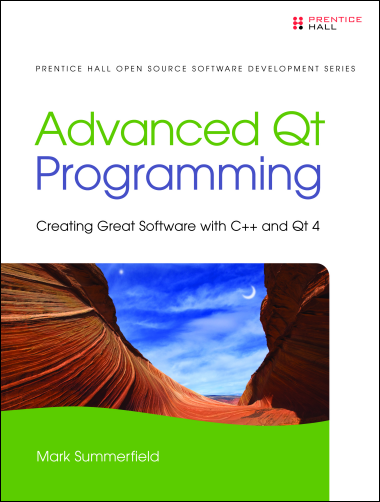

Advanced Qt Programming
Creating Great Software with C++/Qt 4
by
Mark Summerfield
ISBN-10: 0321635906 – ISBN-13:
978-0321635907
A sample
chapter is available free from InformIT—click "Sample Content" and then "Download
the sample pages".
This 550 page book is aimed at existing C++/Qt programmers and presents
ideas and techniques that are too advanced or specialized (although not
necessarily difficult), for a first book on Qt.
Qt has now grown to over 700 classes and well over a million words of
documentation, far too much to cover in a single volume. So instead of
covering everything very thinly, the book focuses on key areas of Qt
technology and tries to provide more comprehensive coverage than is
available elsewhere.
The book is completely practical in emphasis, with every technique
illustrated by working code. The examples show Qt best practices. They
have been tested on Linux, Mac OS X, and Windows, using
Qt 4.6, and where possible (e.g., using #if QT_VERSION),
Qt 4.5. In addition they have been tested on Linux using
Qt 4.8 and Qt 4.7 (which versions should also be fine for Mac
OS X and Windows).
The book's main themes are hybrid desktop/Internet applications,
threading, rich text handling, Qt's graphics/view architecture, and Qt's
model/view architecture (to which four chapters are devoted), although
many other topics are covered. Besides each chapter's main subject,
lots of other classes, methods, and techniques are used wherever they
make sense, to show as many Qt features as possible. So even the most
experienced Qt programmer should discover aspects of Qt they weren't
aware of, discover new techniques, and be inspired with new ideas.
The book can be bought from most online and local book stores.
Only the printed editions in English are definitive—although available in
electronic formats, "ebooks" usually restrict your rights, and they are
often retypeset which can introduce errors. A legal PDF version is
available from InformIT.
Translations are arranged by the publisher and their quality can vary
considerably.
Downloads
In view of the EU’s Cyber
Resilience Act and an abundance of caution, we have withdrawn all
our free software, including our book examples.
Table of Contents
- Foreword by Eirik Chambe-Eng
- Introduction
- Chapter 1. Hybrid Desktop/Internet Applications
- Internet-Aware Widgets
- Using WebKit
- Chapter 2. Audio and Video
- Using QSound and QMovie
- The Phonon Multimedia Framework
- Chapter 3. Model/View Table Models
- Qt's Model/View Architecture
- Using QStandardItemModels for Tables
- Creating Custom Table Models
- Chapter 4. Model/View Tree Models
- Using QStandardItemModels for Trees
- Creating Custom Tree Models
- Chapter 5. Model/View Delegates
- Datatype-Specific Editors
- Datatype-Specific Delegates
- Model-Specific Delegates
- Chapter 6. Model/View Views—This is available as a sample
chapter—click "Sample Content" and then "Download
the sample pages".
- QAbstractItemView Subclasses
- Model-Specific Visualizing Views
- Chapter 7. Threading with QtConcurrent
- Executing Functions in Threads
- Filtering and Mapping in Threads
- Chapter 8. Threading with QThread
- Processing Independent Items
- Processing Shared Items
- Chapter 9. Creating Rich Text Editors
- Introducing QTextDocument
- Creating Custom Text Editors
- A Rich Text Single Line Editor
- Multiline Rich Text Editing
- Chapter 10. Creating Rich Text Documents
- Exported QTextDocument File Quality
- Creating QTextDocuments
- Exporting and Printing Documents
- Painting Pages
- Chapter 11. Creating Graphics/View Windows
- The Graphics/View Architecture
- Graphics/View Widgets and Layouts
- Introducing Graphics Items
- Chapter 12. Creating Graphics/View Scenes
- Scenes, Items, and Actions
- Enhancing QGraphicsView
- Creating a Dock Widget Toolbox
- Creating Custom Graphics Items
- Chapter 13. The Animation and State Machine Frameworks
- Introducing the Animation Framework
- Introducing the State Machine Framework
- Combining Animations and State Machines
- Epilogue
- Selected Bibliography
- Index

Unsolicited Reader Comments
- "Your books are great. The tree model/view chapter in `Advanced
Qt Programming' saved me a great deal of time."
- "I've been using your book for a while now, it's excellent."
- "I have just bought `Advanced Qt Programming'. A very cool book indeed!"
- "I'm currently using `Advanced Qt Programming' to get some coding done. Well worth the purchase."
- "I got your book "Advanced Qt Programming" and tried some code I downloaded from
you website—thank you for writing this nice book!"
For more information on Qt see
Qt Development Frameworks.
Like all my books and most of my other
writings, this book was written using the Lout Typesetting System.
Your Privacy •
Copyright © 2006 Mark Summerfield.
All Rights Reserved.
Top